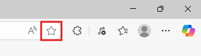
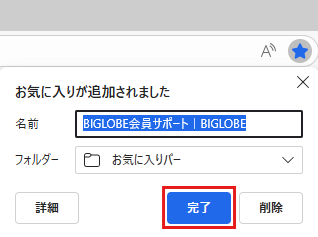
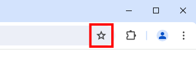
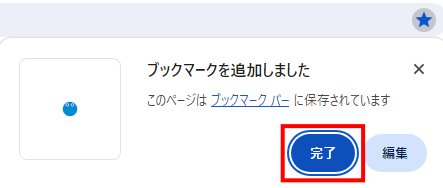
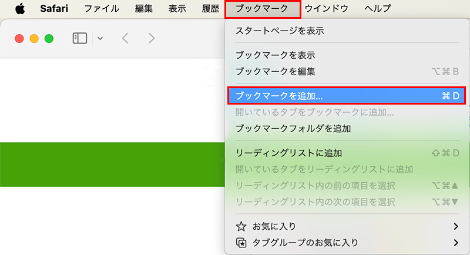
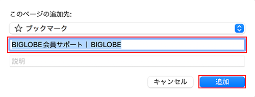
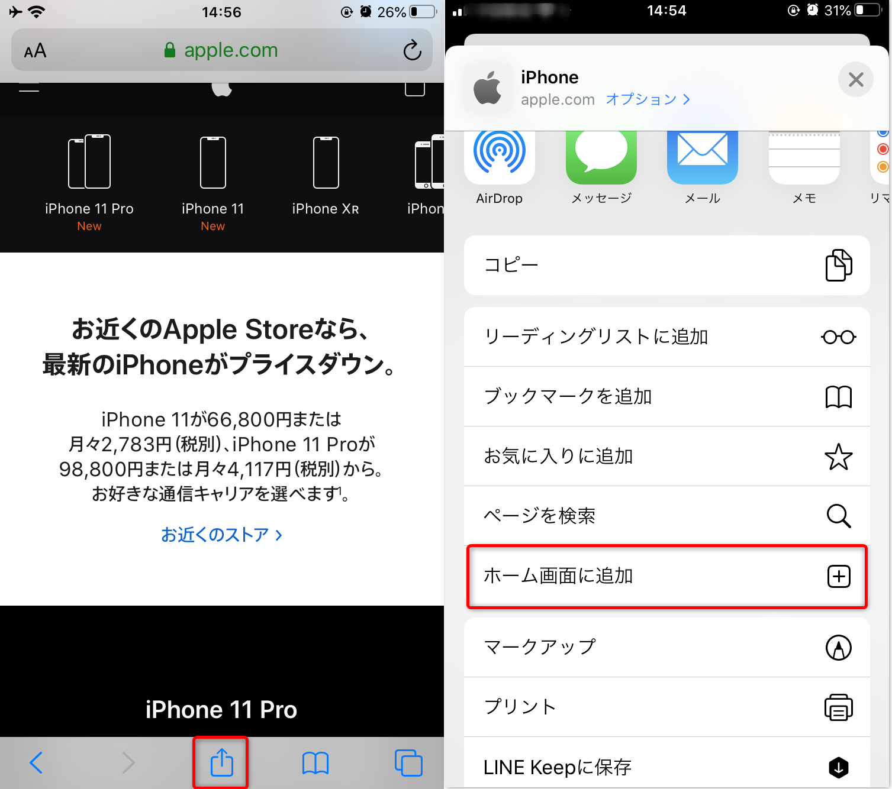
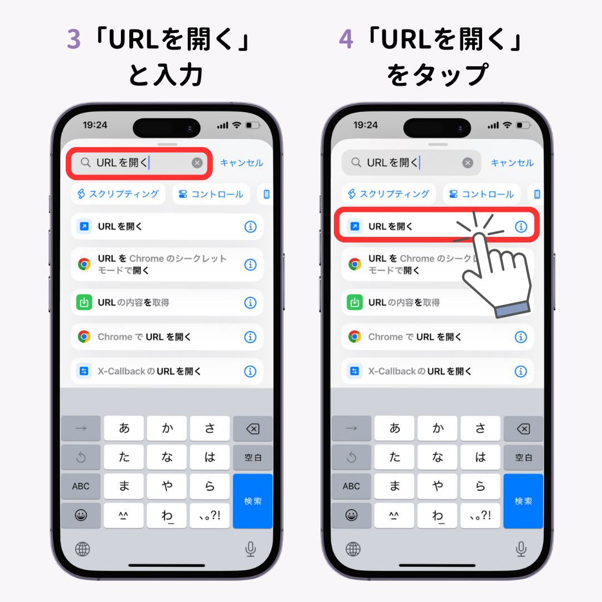
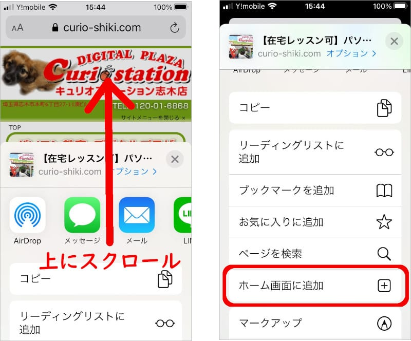

なぜブックマーク・お気に入りに登録するの？
毎月URLが変わります
- ここさえブックマークしておけばいつでも行けます
- 長いURLを覚える必要がない
- ワンクリックでM-CITYに入れる
スマホならもっと便利
- ホーム画面にアプリのように配置
- 他のアプリと同じように起動
- ブラウザを開く必要がない
パソコンでのブックマーク・お気に入り登録

Microsoft Edge
Windows標準ブラウザ
1 M-CITYのページを開く
まず、M-CITYのページをEdgeで開いてください。
2 ★マークをクリック
アドレスバー（URLが表示されている場所）の右端にある★（星マーク）をクリックしてください。

アドレスバーの右端の★マークをクリック
3 お気に入りに追加
「お気に入りに追加」というウィンドウが表示されるので、「追加」ボタンをクリックしてください。

「追加」ボタンをクリックして完了

Google Chrome
世界で最も使われているブラウザ
1 M-CITYのページを開く
まず、M-CITYのページをChromeで開いてください。
2 ★マークをクリック
アドレスバーの右端にある★（星マーク）をクリックしてください。星が黄色になります。

アドレスバーの右端の★マークをクリック
3 ブックマークに追加完了
「ブックマークに追加しました」というメッセージが表示されれば完了です。

★マークが青色になればブックマーク完了

Safari（Mac）
Apple Mac標準ブラウザ
1 M-CITYのページを開く
まず、M-CITYのページをSafariで開いてください。
2 ブックマークメニューを開く
画面上部のメニューから「ブックマーク」をクリックして、「ブックマークに追加」を選択してください。

メニューバーの「ブックマーク」から追加できます
3 追加完了
ブックマーク名を確認して「追加」ボタンをクリックすれば完了です。

追加先を確認して「追加」をクリック
スマートフォンでの登録方法

iPhone（Safari）
ホーム画面に追加できます
1 M-CITYのページを開く
SafariでM-CITYのページを開いてください。
2 共有ボタンをタップ
画面下部の□（四角に上矢印）の共有ボタンをタップしてください。

画面下部中央の共有ボタン（□↑）をタップ
3 「ホーム画面に追加」をタップ
メニューの中から「ホーム画面に追加」を探してタップしてください。

「ホーム画面に追加」をタップ
4 追加完了
アプリ名を確認して「追加」をタップすれば、ホーム画面にM-CITYのアイコンが表示されます。

ホーム画面にアイコンが追加される
iPhone（Chrome）
Chromeアプリでの登録方法
1 M-CITYのページを開く
ChromeアプリでM-CITYのページを開いてください。
2 メニューボタンをタップ
画面右上の「⋯」（三点リーダー）をタップしてください。
3 「ブックマークに追加」をタップ
メニューから「ブックマークに追加」を見つけてタップしてください。
4 保存完了
ブックマーク名を確認して「保存」をタップすれば完了です。

Android（Chrome）
ホーム画面に追加できます
1 M-CITYのページを開く
ChromeアプリでM-CITYのページを開いてください。
2 メニューボタンをタップ
画面右上の「⋮」（三点リーダー）をタップしてください。
3 「ホーム画面に追加」をタップ
メニューから「ホーム画面に追加」を探してタップしてください。
4 追加完了
アプリ名を確認して「追加」をタップすれば、ホーム画面にM-CITYのアイコンが表示されます。
よくある質問
ブックマークが見つからない
PC（Chrome・Edge）：画面上部のブックマークバーを確認するか、「⋮」メニュー→「ブックマーク」から確認
iPhone：ホーム画面やSafariのブックマークメニューを確認
Android：ホーム画面やChromeのブックマークメニューを確認
ホーム画面に追加したのに見つからない
ホーム画面の他のページ（左右にスワイプ）を確認してみてください。
アプリドロワー（すべてのアプリが表示される場所）も確認してみてください。
削除したい場合は？
PC：ブックマークを右クリック→「削除」
スマホ：アイコンを長押し→「削除」または「アンインストール」